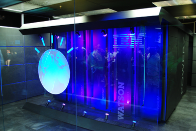
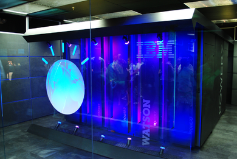

| Company description |
Deliver the best digital solutions to make their customers successful. |
| Culture |
A unique combination of being a system integrator and a digital agency. Others recognize them by their craftsmanship, dedication, taking on the challenge, wanting to be the best and not being satisfied until their customer is successful. They are passionate professionals, tech savvy, design talents, data geeks and social leaders who love challenges. They are more than a contractor; they act as a partner and challenge you. |
| IT Roles |
PHP developer, Data Engineer, Technical specialist, Software Engineer, Data and Analytics Consultant. |
| Used Technologies |
Microsoft Power BI (Business Intelligence) |
| Technologies description |
Combines two major employee wishes. First, it makes internal and external data easily accessible for analysis and all kinds of applications. Second, it is self service. IT supplies the data, the tools and the data platform and the business independently makes analyzes, reports and dashboards. |
 
